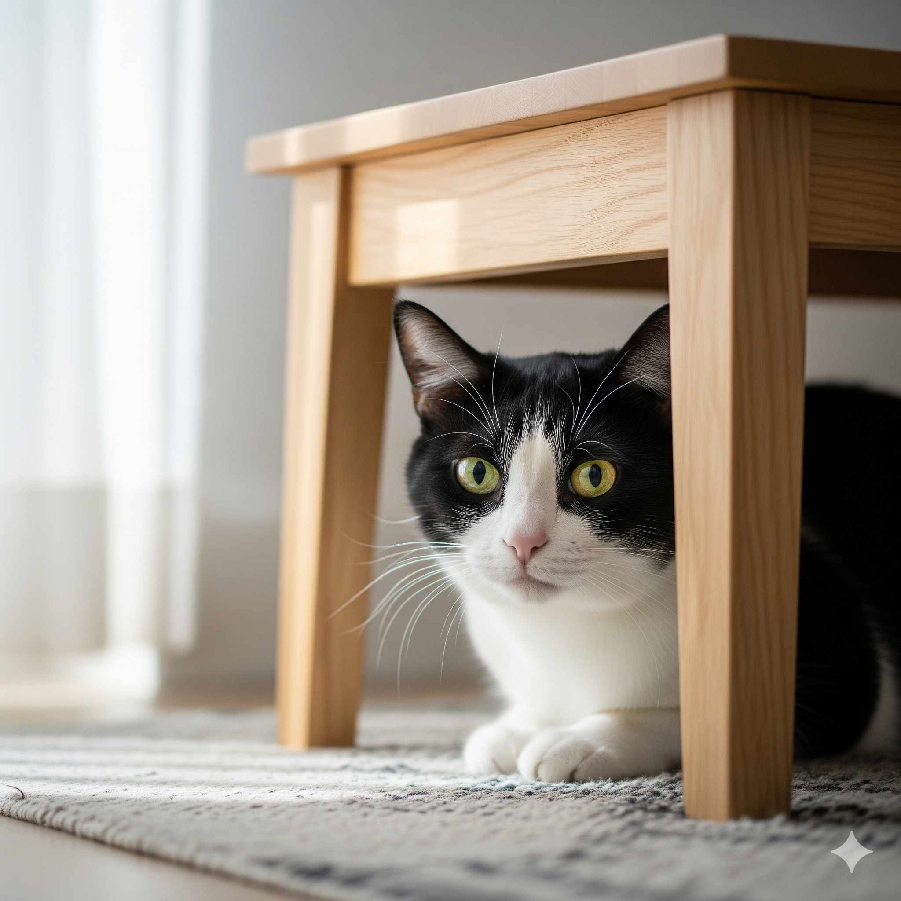

Estresse Felino: sinais, causas e como ajudar seu gato a viver melhor

Quem convive com gatos sabe bem: eles são mestres em demonstrar descontentamento. Aquele olhar de julgamento quando você chega tarde do trabalho, a expressão de desdém diante da nova ração... Mas nem sempre o que interpretamos como “drama felino” é apenas birra. Assim como os humanos, os gatos também enfrentam situações que provocam estresse e ansiedade genuínos.
O problema é que muitas vezes confundimos esses sinais com “manha” ou “mau humor” típico da espécie. Na verdade, o estresse felino é uma questão séria que merece nossa atenção, pois pode afetar drasticamente tanto o comportamento quanto a saúde física do animal. E aqui está o ponto crucial: diferentemente dos humanos, os gatos não conseguem nos explicar o que está acontecendo com eles.
😼 O que é estresse em gatos?
O estresse é uma resposta biológica completamente natural que surge quando o organismo identifica situações percebidas como ameaçadoras ou desconfortáveis. É como se o corpo entrasse em “modo de alerta”, preparando-se para enfrentar ou fugir de um perigo iminente.
No universo felino, essa reação pode ser desencadeada por uma infinidade de fatores que, para nós humanos, podem parecer insignificantes. A diferença é que os gatos são animais extremamente sensíveis a mudanças e possuem necessidades comportamentais muito específicas. Quando essas necessidades não são atendidas, ou quando o ambiente se torna imprevisível demais, o sistema nervoso entra em estado de alerta constante.
O interessante é que cada gato reage de forma única ao estresse. Enquanto alguns se tornam mais retraídos e buscam se esconder, outros podem desenvolver comportamentos mais agitados ou até agressivos. Essa individualidade torna ainda mais importante conhecer profundamente o temperamento do seu felino.
🔎 Principais causas de estresse felino
O mundo dos gatos é cheio de sutilezas que frequentemente passam despercebidas pelos tutores. Pequenas alterações no ambiente ou na rotina podem representar mudanças gigantescas na perspectiva de um felino.
Mudanças na rotina ou no ambiente são talvez os gatilhos mais comuns. A simples troca de posição da caixa de areia pode gerar desconforto, assim como móveis novos, reformas na casa ou até mesmo a mudança na marca da areia utilizada. Para um animal que preza pela previsibilidade, essas alterações representam uma quebra de segurança.
Conflitos territoriais também ocupam lugar de destaque na lista de estressores felinos. A chegada de um novo pet, seja ele gato ou cachorro, pode desencadear uma verdadeira crise territorial. O mesmo vale para mudanças na composição familiar — a chegada de um bebê, novos moradores ou até visitas muito frequentes podem abalar o equilíbrio do ambiente.
Barulhos intensos representam outro fator crítico. Gatos possuem audição muito mais apurada que a nossa, então sons que consideramos toleráveis podem ser ensurdecedores para eles. Fogos de artifício, obras próximas, música em volume alto ou mesmo eletrodomésticos barulhentos podem gerar estresse crônico.
A falta de estímulos é uma causa frequentemente subestimada. Gatos são predadores por natureza e precisam exercitar seus instintos através de brincadeiras e exploração. Ambientes monótonos, sem desafios ou oportunidades de caça (mesmo que simulada), podem levar ao tédio e, consequentemente, ao estresse.
Por fim, problemas de saúde não devem ser ignorados. Dor, desconforto, alterações hormonais ou qualquer condição que afete o bem-estar físico pode intensificar significativamente os níveis de estresse. É um ciclo que se retroalimenta: o estresse pode agravar problemas de saúde, e problemas de saúde podem intensificar o estresse.
🚨 Sinais de estresse em gatos
Identificar estresse em gatos requer um olhar atento e conhecimento sobre o comportamento normal do seu felino. Os sinais podem ser sutis no início e se intensificar gradualmente, ou aparecer de forma repentina em situações de estresse agudo.
O comportamento de se esconder com frequência é um dos indicadores mais claros. Se seu gato, que normalmente circula pela casa, começa a passar longos períodos embaixo da cama, dentro de armários ou em outros locais isolados, pode ser um sinal de que algo não está bem. Esse comportamento indica que o animal está buscando segurança e controle sobre o ambiente.
Alterações no apetite são outra bandeira vermelha importante. Alguns gatos param completamente de comer, enquanto outros reduzem drasticamente a quantidade de alimento consumido. Em casos mais raros, pode ocorrer o oposto — alguns felinos passam a comer compulsivamente como forma de lidar com a ansiedade.
Problemas relacionados à caixa de areia são extremamente comuns em gatos estressados. Urinar ou defecar fora da caixa pode indicar tanto problemas comportamentais quanto médicos, e frequentemente ambos estão interligados. É importante investigar se há mudanças na areia, localização da caixa ou limpeza inadequada.
O comportamento de lambedura excessiva merece atenção especial. Gatos naturalmente se higienizam várias vezes ao dia, mas quando essa atividade se torna compulsiva, pode resultar em áreas sem pelos ou até feridas na pele. Geralmente começam lambendo uma região específica e podem expandir para outras áreas do corpo.
Mudanças bruscas na personalidade também são indicadores importantes. Um gato dócil que de repente se torna agressivo, ou um felino sociável que para de interagir com a família, está sinalizando que algo mudou em seu estado emocional.
A queda de pelos em excesso pode indicar estresse crônico. Embora gatos naturalmente troquem de pelos, especialmente durante mudanças de estação, uma perda excessiva fora desses períodos pode ser preocupante.
🌱 Como ajudar seu gato a reduzir o estresse
Felizmente, existem diversas estratégias eficazes para ajudar nossos felinos a lidarem melhor com situações estressantes. O segredo está em criar um ambiente que atenda às necessidades naturais da espécie.
Criar um cantinho seguro é fundamental. Todo gato precisa de um espaço que seja exclusivamente seu, onde possa se refugiar quando se sentir sobrecarregado. Pode ser uma cama aconchegante em local elevado, uma casinha específica para gatos ou até mesmo uma caixa de papelão em local tranquilo. O importante é que esse espaço seja respeitado e nunca invadido forçosamente.
Estabelecer uma rotina consistente proporciona previsibilidade, algo que os gatos valorizam enormemente. Horários regulares para refeições, brincadeiras e mesmo para a limpeza da caixa de areia ajudam o felino a se sentir mais seguro e no controle.
A oferta de estímulos adequados é crucial para o bem-estar mental felino. Brinquedos que simulem presas, como ratinhos de pelúcia ou varinhas com penas, permitem que o gato exercite seus instintos de caça. Arranhadores são essenciais não apenas para manter as unhas saudáveis, mas também para marcação territorial. Prateleiras e locais elevados oferecem pontos de observação seguros.
Os feromônios sintéticos podem ser grandes aliados em casos de estresse. Produtos como difusores que liberam feromônios faciais felinos ajudam a criar uma sensação de familiaridade e segurança no ambiente. Eles são especialmente úteis durante mudanças ou adaptações.
Respeitar o tempo e o espaço do gato é uma regra de ouro. Forçar interações quando o felino claramente não está receptivo pode intensificar o estresse. É melhor permitir que ele se aproxime no próprio ritmo.
Enriquecimento ambiental vai além de brinquedos. Plantas seguras para gatos, fontes de água corrente, janelas com vista para o exterior e até mesmo música específica para felinos podem contribuir para um ambiente mais estimulante e relaxante.
A alimentação também pode ser uma ferramenta de manejo do estresse. Quebrar as refeições em porções menores ao longo do dia, utilizar brinquedos alimentares que estimulem o forrageamento, ou oferecer petiscos especiais em momentos de tensão podem ajudar.
Manter a consistência na limpeza é fundamental. Caixas de areia sempre limpas, água fresca disponível e comedouros higienizados contribuem para um ambiente saudável e previsível.
É importante lembrar que mudanças devem ser graduais. Se for necessário alterar algo na rotina ou ambiente do gato, faça isso de forma progressiva, permitindo que ele se adapte aos poucos.
Por fim, procurar orientação veterinária é essencial quando os sinais de estresse persistem ou se intensificam. Profissionais especializados podem avaliar se há questões médicas envolvidas e orientar sobre tratamentos específicos, incluindo terapias comportamentais ou, em casos mais severos, medicação.
💛 Setembro Amarelo e a saúde mental felina
Durante o mês de conscientização sobre saúde mental, é importante refletir sobre como nossa responsabilidade como tutores se estende também ao bem-estar emocional de nossos companheiros felinos. Assim como cuidamos de nossa própria saúde mental, precisamos estar atentos aos sinais que nossos gatos nos enviam.
A conexão entre o bem-estar humano e animal é mais profunda do que imaginamos. Gatos estressados podem impactar o ambiente familiar, assim como ambientes familiares tensos podem afetar nossos felinos. É uma via de mão dupla que merece nossa atenção.
Prevenir o estresse felino não é apenas uma questão de responsabilidade — é um investimento na qualidade de vida de toda a família. Um gato equilibrado e feliz contribui para um lar mais harmonioso, fortalecendo os vínculos afetivos entre todos os membros da família.
Cuidar da mente deles é também cuidar da nossa. Quando oferecemos um ambiente seguro, estimulante e acolhedor para nossos felinos, estamos criando um espaço de bem-estar que beneficia a todos. Afinal, a felicidade é contagiosa, e isso vale também para nossos companheiros de quatro patas.
💚
← Voltar para o blog